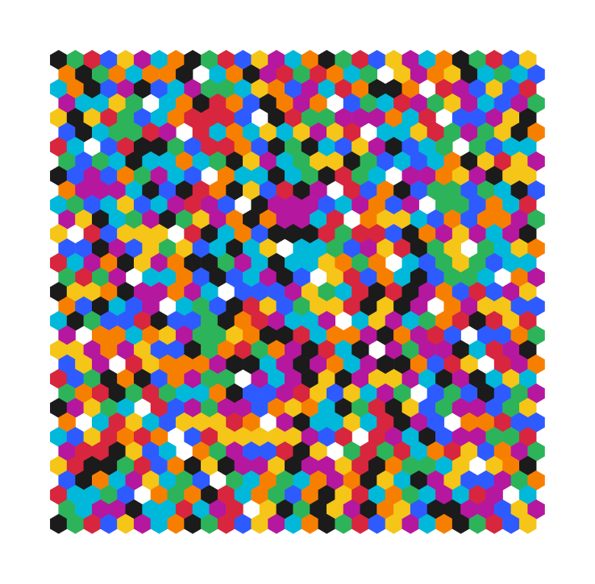

Overview
Prism is a 2D code made of hexagon cells, each one a color. A reader turns a photo of it back into bytes.
Capabilities at a glance
| Item | Value | Conditions |
|---|---|---|
| Raw capacity, color | Up to 4,561 bytes | 8 colors, size 6 (113 x 130). Before parity trade-offs, locking or signing. |
| Raw capacity, black and white | Up to 1,523 bytes | Size 6. A standard QR holds up to 2,953 bytes; Prism passes it in color. |
| Locked or signed capacity | Less than raw | A locked code adds about 56 bytes. A signature adds more. |
| Reader speed | Median about 100 to 120 ms | Desktop Chrome, synthetic images, successful reads only: about 101 ms (build 0.2.15) and about 118 ms on our degraded comparison set. Failed reads run to about 1 s. |
| Reader success | 66.1% of 938 stress cases, 0 wrong | Hard synthetic stress set, desktop. The rest returned "try again". |
| Largest size that reads | Size 5 (81 x 94) reliably | Clean flat renders, desktop, 0 wrong. The bulk reader reads size 6 in 15 of 16 (about 2.7 s). |
| Bulk / production use | 719 of 720 exact, 0 wrong | Build 0.2.47, synthetic set, desktop. Standard images median about 38 to 45 ms, a hard glare photo about 0.75 s. |
| Signed by a key | Available | Shows the code is unchanged and was made by one key. |
Cells, colors and sizes
Cells sit on a hex grid: pointy-top, with every other row shifted half a cell. 8-color mode uses cyclic Gray coding, so a cell carries 3 bits and neighbouring colors differ by one bit. Black and white mode carries 1 bit per cell, which is why it holds about a third of the data.
| Size | Grid (columns x rows) |
|---|---|
| 1 | 21 x 24 |
| 2 | 29 x 33 |
| 3 | 41 x 47 |
| 4 | 57 x 66 |
| 5 | 81 x 94 |
| 6 | 113 x 130 |
Capacity depends on size, palette and error correction. Size 6 holds up to 4,561 bytes in color and 1,523 in black and white. Size 2 holds 212 payload bytes in color at 20% parity, and size 6 holds 4,071 at the same setting.
Density
The largest Prism holds 4,561 bytes in color. The largest QR code holds 2,953 bytes. That is about 54% more data, in under half the cells, or about 3.3 times the data per cell.
| Largest Prism | Largest QR | |
|---|---|---|
| Grid | 113 x 130 | 177 x 177 |
| Cells or modules | 14,690 | 31,329 |
| Capacity | 4,561 bytes in color | 2,953 bytes |
In black and white the largest Prism holds 1,523 bytes.
The header stores a length up to 8,191 bytes, but real capacity comes from the cells left after the fixed parts, the palette and the parity level.
What is on the code
- Orientation gap. A cut corner (the notch) tells the reader which way is up. There are no corner squares or finder patterns.
- Asymmetric ring. A border ring helps the reader find the edge and fix bending.
- Known pilot cells. Cells with known colors let the reader calibrate lighting and tint, and refine the grid.
- Header. Size, palette, parity level, whether the payload is text or a file, and length, written three times with a CRC-4 on each copy.
- Data cells. The payload and its parity, shuffled by a seed so damage in one spot spreads over many blocks.
Keep a white margin at least one cell wide around the code.
Encoding, step by step
- Take the bytes (text is UTF-8, or a raw file).
- Add a CRC-32 of the payload.
- Pad to fill the blocks with a fixed pseudo-random pattern. The padding is not stored: the reader restores it from the length in the header. Codes made before this change were padded with zeros, and readers still read them. The pattern keeps unused room from showing as a block of black cells.
- Split into Reed-Solomon blocks and add parity.
- Shuffle the cells with a seeded permutation.
- Map bits to colors with the Gray code and place them on the grid around the pilots, ring and notch.
- Draw the cells as a PNG with a white margin.
Error correction
Reed-Solomon over GF(256) with the 0x11D polynomial. You pick the parity share: 10%, 20%, 30% (default) or 40%. More parity repairs more damage and leaves less room for data. Blocks correct a mix of errors (wrong cells) and erasures (cells known to be unreadable, for example under glare). Each erasure costs half as much parity as an error.
When the first decode fails its checksum, the reader marks the least certain cells as erasures in widening steps (a coarse ladder first, then a denser one with bounded combinations) and tries again.
Unit test: 5,000 of 5,000 seeded mixed error and erasure trials passed within the correction limit, plus 3,000 earlier trials.
Reading
- Find the code. Connected components and a convex hull separate it from the background.
- Geometry. Edge fits on the hull, a projective transform, then coordinate-descent refinement. Pilot cells refine the mesh further.
- Color. Calibrate in linear RGB and Lab from the known cells, so tinted light and paper do not break it.
- Bits. Each cell gives soft bit likelihoods, not a hard guess. The header is decoded from its three copies.
- Repair. Reed-Solomon with the erasure ladder.
- Verify. A result is shown only if the payload CRC-32 matches. Otherwise the reader says "try again". It never shows a guess.
With the camera, frames from up to three seconds can optionally be fused. Camera frames are capped at 1280x720. Photos keep up to 2048 px on the long side. Decoded content is shown as text and never opened or run automatically.
CRC-32 checks that the bytes arrived intact; a signed code proves who made it.
The pages
Every page on the site and what it is for.
| Page | What it is for |
|---|---|
| Home | The story of the format: what a scan does, capacity in color, and what is planned next. |
| Use | The simple app: make a code, scan a code, run the self-test. |
| Advanced | The same maker, reader and self-test, framed for power users. |
| Docs | This page. |
| Camera scanner | Live camera scan. Needs HTTPS. Works offline once loaded. |
| Reader | Photo upload, aimed at under a second, with its own create and test tabs. |
| Bulk / production reader | For large data batches. Tries harder on difficult photos and takes longer, with its own create and test tabs. |
| 3D stress simulator | Bends, tilts and degrades a code to test the reader. |
| Prism Secure | Lock a code with a password and sign it with your own key. |
| Boarding pass | A signed boarding pass demo with airline, passenger and gate views. |
| Install | Add Prism to a home screen or desktop, and embed a scan button in your own page. |
| Print kit | Test sheet, stickers and a poster, with size guidance. |
| Build status | Measured figures and the full build log. |
| License | The project license, kept on this site. |
Make a code
The Use and Advanced pages share the same maker, and the reader pages carry the same controls on their create tabs.
| Control | What it does |
|---|---|
| Message | Type a message or paste a link. Text is stored as UTF-8. |
| Expert mode (Use page) | Shows the controls below. With it off, the maker picks automatic settings. |
| File instead of text | Encode a small file as raw bytes. The header marks the payload as a file, and the reader offers it back as a download. |
| Code size | Automatic picks the smallest grid that fits. You can also pick any of the six grids, 21 x 24 to 113 x 130 cells. |
| Error correction | 10, 20, 30 or 40 percent parity. 30 is the default. More parity repairs more damage and leaves less room for data. |
| Palette | 8 colors, or black and white for a mono printer. |
| PNG cell radius | 8 px compact, 12 px standard, 20 px large or 32 px print. The white margin is always drawn around the code. |
| Logo or photo | Place your logo or a photo in the middle of the code (Use and Advanced pages). Small, Medium, Large or Largest, with Medium as the default and a Remove button. |
With a logo on, the encoder places the repair data under the middle of the code and sets error correction to the highest level, so the code stays readable. The logo sits in a cutout of its own shape, with the cells forming its edge and no white square behind it. After each change the page reads the finished code back with the real reader, and steps the logo down a size automatically until the code reads back exactly.
Press Make my code, then Save the picture. A capacity line shows how much of the grid the payload uses, and Read this code reads the fresh PNG straight back.
The first time you open the Use page, a short guide makes a sample "Hello, Prism!" code, shows a link code that opens the scanner on your phone, and can read the sample in place. Hide dismisses it for next time. The links use.html#make and use.html#scan open the matching tab.
Scan a code
The same scanner sits on the Use page, the Advanced page and both reader pages.
| Control | What it does |
|---|---|
| Choose a photo | Read a saved photo or image file, or take a new photo with the device camera. |
| Open camera | Scan live inside the page, with start and stop controls. |
| Result | Only a payload whose CRC-32 matches is shown. Copy result copies the text, and Save bytes downloads a file payload. |
| Links | An http or https result becomes a link you can choose to tap. |
| Debug | Record step-by-step scan debug saves a trace of each reader stage, and Scan details & tuning constants lists the reader's current settings. |
On the camera scanner page you can start, stop and switch cameras and turn on the torch. The verified value sits in a card under the view, an overlay follows the code between verified reads, and each frame gets a 980 ms search budget. Codes with a logo in the middle read the same way. The camera stops when you leave the page or switch apps.
Photo retry. When a photo read does not verify, the reader balances the colors in the photo and tries once more, which helps with glare photos. The retry runs on the Use, Advanced and Prism Secure pages and the fast reader, on photo uploads. Camera frames are read once each.
Test and simulator
Self-test. The Use, Advanced and reader pages carry the same Test tab. Seeded synthetic images go through the same reader as uploaded photos, with no generated corners given. Pick the suite (the original spec at three distortion levels, or the independent 3D cylinder with a stronger cast and blur), the trials per level (10, 100 or 500) and a random seed, then Run self-test. Stop test cancels the run and Save report downloads the results.
Simulator. The 3D stress simulator renders a code onto a scene and tests the reader on the pixels you see. Presets set up clean, busy background, tilted, cylinder, green cast and everything-at-once scenes. Sliders control the surface (flat sheet, true cylinder wrap or bent sheet), bend, yaw, pitch, rotation, camera distance and position, plus background and foreground objects, light, glare, color, lens and sensor. An ideal-geometry check scores the reader only on scenes a perfect geometry read could decode. You choose the FAST reader, bounded to about a second, or the SLOW reader, with extended recovery, then test one image or run repeated random scenes with 10, 50, 100 or 500 trials and save the report. It registers the site's offline cache, so it works offline once loaded.
Locking and signing (Prism Secure)
Prism Secure wraps the payload before it becomes cells. It runs on your device with the browser crypto plus an MIT-licensed Argon2id (hash-wasm).
| Step | Detail |
|---|---|
| Key from password | Argon2id, 128 MiB memory, 3 passes. A fresh random 16-byte salt per code. |
| Lock | AES-256-GCM with a random 12-byte nonce. Layout: header, salt (16), nonce (12), ciphertext plus 16-byte tag. About 56 bytes of overhead, so a locked code holds less than the raw capacity. |
| Sign (optional) | ECDSA P-256 with your own key. Shows the code is unchanged and made by that key. |
What it protects: someone who photographs a locked code sees random data, and any change is detected.
QR codes can be encrypted too, but each app needs its own scheme. A QR has no built-in lock.
Boarding pass
A boarding pass can be a Prism code. The airline signs it, the passenger holds it on their phone, and the gate checks the signature on its own device with no network. Try it on the boarding pass page.
| Step | Detail |
|---|---|
| Airline issues | Flight, route, seat and passenger go into the pass. The airline signs it with its own key (ECDSA P-256) and the code carries the signature and public key (129 bytes). |
| Passenger holds | The phone shows the code and renews it at the refresh time the airline chose, from 5 to 60 seconds. Each renewal is a time stamp signed with the pass key. |
| Gate checks | The gate scans with the Prism reader and checks the airline signature against its list of trusted airline keys. A code older than the refresh time plus 25 seconds is rejected. A scanned pass is marked boarded. |
What is inside the code: a standard IATA boarding pass text line (passenger, booking reference, route, flight, day, seat, sequence), one extra line with gate, terminal, boarding and departure times, full date, refresh time and the pass key, and then the airline signature.
The demo has three views. Airline issues a signed pass: route, flight, date, times, gate, terminal, passenger, seat, class, booking reference and the refresh time. Passenger keeps the pass on the phone, saved on the device and working offline, with a downloadable credential and a copyable pass link. Gate sets up per flight, holds its list of trusted airline keys offline, scans with the camera or an image, keeps a log of recent scans, and counts boarded passengers.
The demo can also make a forged copy or sign a pass with an unknown key, so you can watch the gate refuse them, and replay a screenshot as if the clock were two minutes ahead.
Install and offline
Prism is a web app. Install it from the install page:
| Device | Steps |
|---|---|
| iPhone or iPad (Safari) | Tap the Share button, then Add to Home Screen, then Add. |
| Android (Chrome) | Tap Install app on the install page, or Install app or Add to Home screen in the browser menu. |
| Computer (Chrome or Edge) | Click Install app on the install page, or the install icon at the right of the address bar. |
- App shortcuts. Long-press the app icon for Scan a code and Create a code.
- Offline. A service worker saves the app on your first visit, so the pages open with no connection. A page that was not saved yet shows the offline page with links back to the tools.
- Share to Prism. On Android you can share a photo straight to Prism; it opens on the Use page with the photo loaded into the scanner.
- Embed. The install page has a "Scan with Prism" button you can paste into any page.
Printing
The print kit makes a test sheet, stickers and a poster, on A4 or US Letter, with optional cut guides.
- Print the test sheet first. It carries four code sizes (30, 40, 52 and 70 mm) and a 100 mm ruler line that confirms the print scale. Print at 100% with margins off.
- Scan every code in normal room light. The smallest one that reads is your minimum size for that printer and paper.
- Print the batch at that size or larger.
Starting values: cell radius 0.9 mm or more, a 29-column code about 52 mm wide, and a scan distance up to about ten times the code width. Matte paper keeps glare down.
Languages and ports
Prism runs in the browser, and the format is growing into more languages. Each port carries both sides of the format: it makes codes that the readers on this site read back exactly, and it reads the codes made here. Every port is proven both ways against the live JavaScript before it is listed.
| Language | Status |
|---|---|
| C | Available now: all features |
| C++ | Available now: all features |
| C# | Available now: all features |
| Python | Available now: encoder, decoder and Prism Secure. Issuers, parts and cards: Coming |
| Java | Available now: encoder, decoder and Prism Secure. Issuers, parts and cards: Coming |
| Swift | Available now: encoder, decoder and Prism Secure. Issuers, parts and cards: Coming |
| Go | Available now: all features and photo reader |
| Kotlin | Available now: all features |
| Rust | Available now: all features |
| TypeScript | Available now: all features |
| PHP | Available now: all features |
| Ruby | Available now: all features |
The ports live in the ports folder on GitHub. Each language is added as it is proven there.
Verified issuers
A signed code shows it was made by one key and has not changed. Verified issuers is a public list on this site, issuers.json, that attaches a name to a signing key's fingerprint. When you scan a signed code, the reader verifies the signature on your device, checks the key's fingerprint against the list, and shows the name it finds. If the code is not locked, the reader also shows the message inside.
| What a scan shows | What it means |
|---|---|
| Signed by a listed name | The signature is valid and the fingerprint is on this site's list. Confirm the fingerprint with the issuer through a channel you know. |
| Signed by a key not on the list | The signature is valid and the key is not yet listed. If you know the fingerprint another way, you can match it yourself. |
| Signature check failed | The code was changed after it was signed, or was not signed by the key it names. |
The badge is green when the signer is on the list, amber when the signature is valid but the key is not listed, and red when the signature check fails.
The list is saved on your device, so lookup keeps working offline after the first visit. Scanning stays on your device: nothing you scan is sent anywhere. Try it: scan the signed sample below with the scanner or from a photo. It is signed by the demo issuer on the list.

Get listed
Anyone can ask to be listed. It is free.
- Make a signing key in Prism Secure and copy its fingerprint.
- Publish that fingerprint somewhere you control, like your site or profile, so people can check it against this list.
- Open an issuer request with your name, fingerprint and link. A maintainer checks the request and adds the entry to issuers.json.
Tickets and cards
Three templates on the Make a code page: Wi-Fi, Contact card and Ticket with an expiry time. Pick a template, fill in the short form, and the page writes the payload into the message box where you can read and edit it before making the code. Wi-Fi and contact payloads use the same text formats QR codes use (WIFI: and vCard 3.0), so the content is not locked to Prism. A ticket is a readable text payload with its expiry time inside.
| What a scan shows | What it means |
|---|---|
| Wi-Fi card | Network name and security type, the password hidden with Show and Copy password. To join, open Settings, Wi-Fi on your phone, choose the network and paste the password. |
| Contact card | Name, title and company with tappable phone, email and website rows. Add to contacts downloads a .vcf file that opens into Contacts on most phones. |
| Ticket, green "Valid until" | The time now is before the expiry written inside the code. |
| Ticket, red "Expired" | The expiry time inside the code has passed. The content is shown for reference and is not treated as valid. |
The expiry is checked against the reader's clock. For a ticket that is protected against edits, lock and sign it with Prism Secure. Round-trip reads in this build: 73 to 93 ms on desktop, exact payload each time.
Big files in parts
One part holds up to about 3.4 KB. A bigger file is cut into numbered parts, each its own code, and the Use page puts it back together. Nothing is uploaded: splitting and rebuilding both happen on your device.
Make the codes
On the Make tab, choose a file (up to 20 MB), pick a part size and press Make the codes. You get a grid of codes, each with Save PNG, and a Save all (ZIP) button.
| Part size | Cells | About per part |
|---|---|---|
| Easy to scan | 41 × 47 | 380 bytes |
| Balanced (default) | 57 × 66 | 825 bytes |
| Dense | 81 × 94 | 1.7 KB |
| Densest | 113 × 130 | 3.4 KB |
Each part carries a file id, its number, the total, the file length, a check value for the whole file, the file name, and a check value for the part itself, on top of the code's own repair data.
Scan the parts
On the Scan tab, scan the parts in any order with the camera or from photos. The reader recognises them by itself and shows progress such as 3 of 7 parts, which numbers are in, and which are still needed. A part you already have is ignored, and a part from a different file is kept out. When the last part arrives the file is rebuilt, its length and whole-file check are verified, and Save the file appears. Start over clears the set.
A scan that finishes with “File rebuilt and verified” means every part is present, in order, and matches the check value stored in the parts. The check shows the file is complete and unchanged since the codes were made. It does not say who made the file.
Every part is needed, and progress is kept only while the page is open.
What we measured
Synthetic images, same decoder as real photos, no access to the true corners. Build 0.1.2 rerun, 500 images per level:
| Test | Passed |
|---|---|
| Rotation, tilt, bend, blur, noise | 500 / 500 |
| Plus color cast and lighting | 491 / 500 |
| Plus 10% covered and glare | 243 / 500 |
| Independent hard color and perspective | 194 / 500 |
| Independent cylinder (curved surface) | 14 / 500 |
The reader, on a separate 938-case stress set, reads 66.1% of cases and showed 0 wrong results. In these tests the reader gave a result or "try again", and no wrong results were recorded.
The build status page keeps the current measured figures and the full build log, newest first.
Privacy and files
No account, no upload, no analytics. The app and readers are static HTML you can save and run offline. Source: GitHub. Install it from the install page. Print settings: print guide. License: license page.